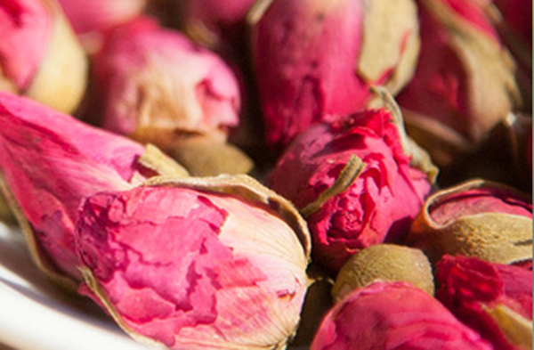
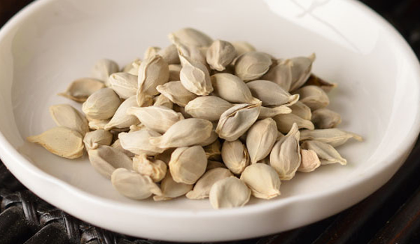
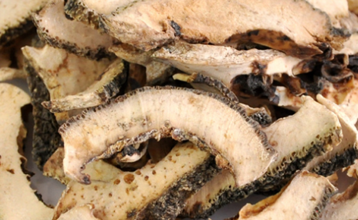
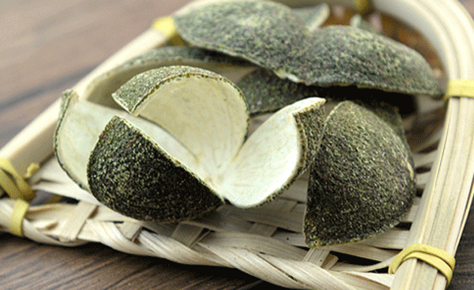
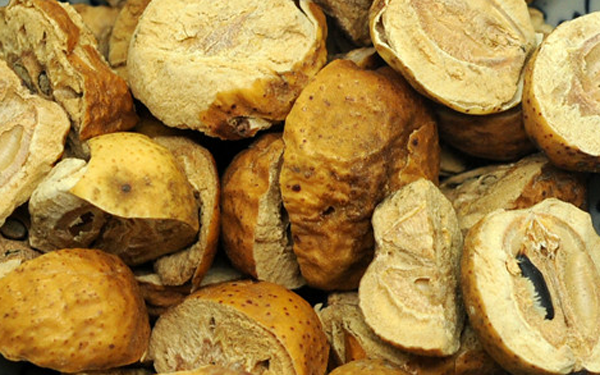
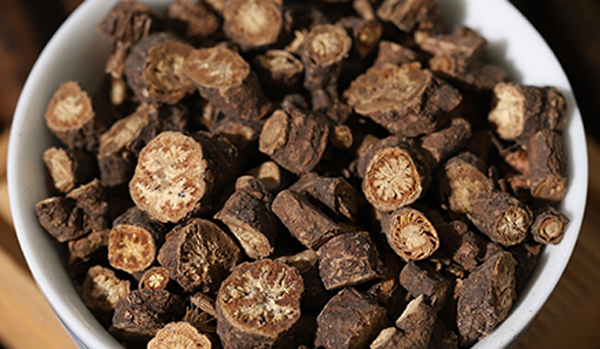

肝郁气结的治疗方法是疏肝理气，肝主疏泄，七情伤肝，情绪疾病都会导致肝郁，更年期女性都有肝郁的情况。治疗肝郁就要使用疏肝理气的中药，主要由柴胡、玫瑰花、川楝子等。肝气郁积还会导致女性乳腺疾病，肝经走乳腺，肝经不畅会导致乳腺增生等乳腺疾病，女人保养最重要的就是养肝。
1、玫瑰花

适应人群：适用于月经不调，肝胃经常感觉里面有气疼痛。
药用部位：玫瑰的花苞。性味温苦，走肝经和脾经，能调理月经。
功效及食用方法：疏肝理气，散淤，治疗因为肝郁导致的月经不调，有淤血的情况。食用方法，可以直接泡水饮用，玫瑰花还有养气血的作用。
2、橘核

适应人群：适用于肝郁导致的疼痛，适用于肝郁引起的乳腺增生的患者。
药用部位：成熟后的种子干燥后入药，有着性味苦平的作用，走肝经和肾经。
功效及食用方法：疏肝理气，散结，治疗因为肝郁导致的乳腺增生，乳腺肿瘤。食用方法主要有和其他药物配伍入药使用。
3、香橼

适应人群：适用于经常呕吐，打嗝，胃胀，胁肋疼痛的人群使用。
药用部位：成熟后的果实干燥后入药，有着性味温苦辛酸，走肝经、脾经、肺经。
功效及食用方法：疏肝理气，和中，化痰，治疗肝郁导致的两肋疼痛，痰多引起的咳嗽。食用方法主要是和其他药物配伍治病。
4、青皮

适应人群：适用于乳腺疼痛有疾病的女性使用。
药用部位：没有成熟的果实的果皮干燥后入药。性味辛苦，走肝经、胃经、胆经，腹部胀气疼痛。
功效及食用方法：疏肝坡起，消食化滞，治疗胃胀，食积，因为肝郁导致的乳腺疼痛和乳腺疾病。食用方法是和其他中药一起配伍治疗疾病。
5、川楝子

适应人群：适用于肝郁化火导致的腹胀，不想吃饭，眼睛发红，心口不顺的情况。
药用部位：成熟后的果实干燥后入药，性苦寒。走小肠经、膀胱经、肝经。有着治疗更年期烦躁不安的功效。
功效及食用方法：疏肝，泄热，行气，止痛，杀虫，治疗因为肝郁化火引起目赤等情况，还能治疗虫积导致的腹痛。食用方法主要是将其和其他药物一起配伍使用治疗疾病。
6、柴胡

适应人群：适用于所有的肝郁患者，感冒的患者使用。
药用部位：根干燥后入药使用，性微寒，味苦，走肝经、胆经、肺经。
功效及食用方法：治疗因为肝郁导致的月经不调，胁肋疼痛常见于心思重还有女性更年期，感冒也可以用柴胡治疗。食用方法有喝其他药物一起配伍治疗疾病还可以泡茶直接饮用治疗肝郁和感冒。
结语：通过上文的介绍，相信大家都了解了关于疏肝理气的中药有哪些，这6味药是常见的治疗肝气郁积的，女性更年期还有脾气较差的人要注意保肝养肝。